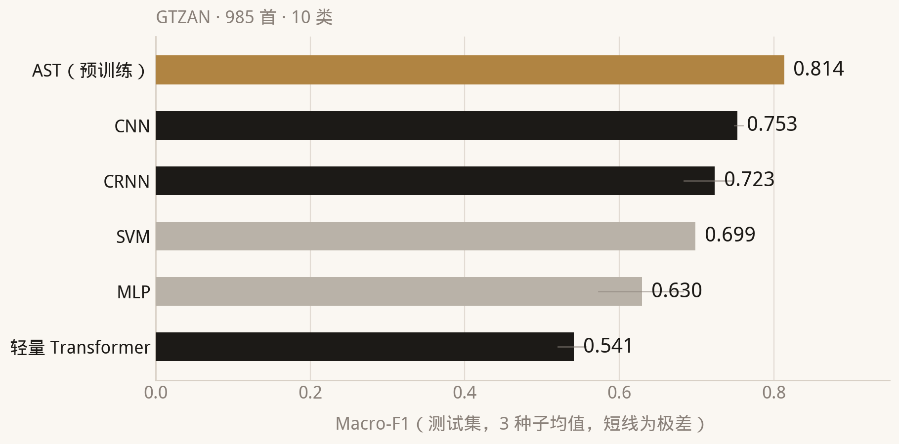
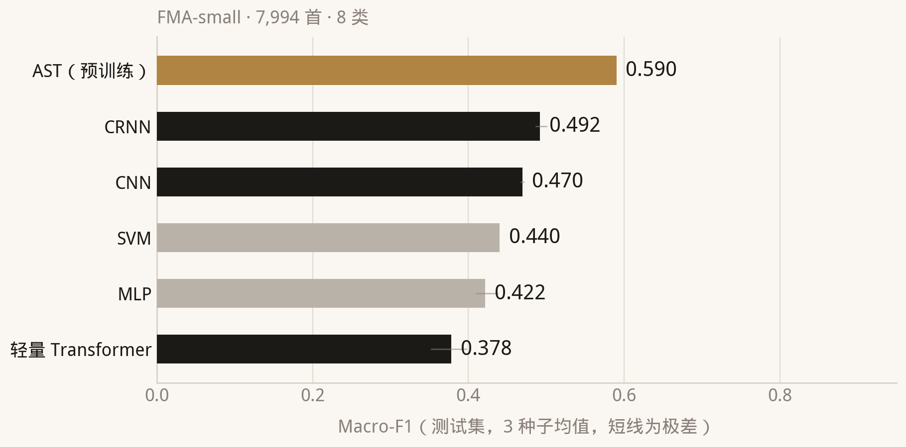
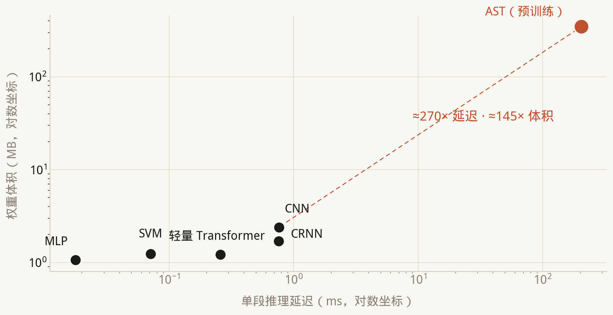
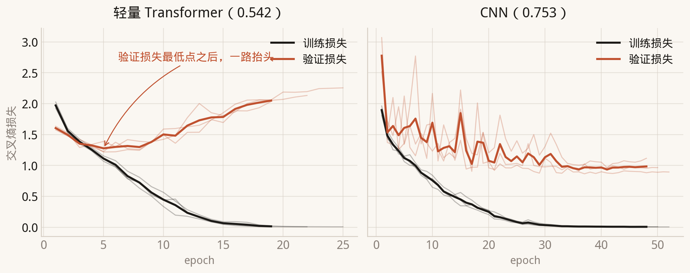
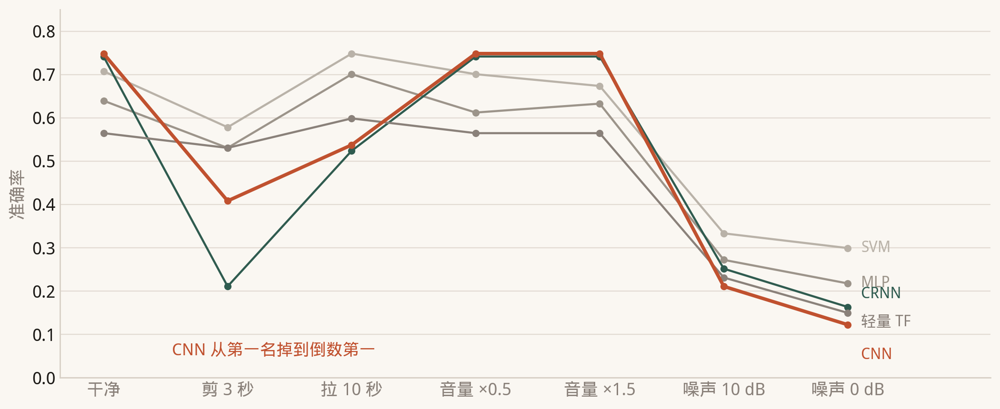
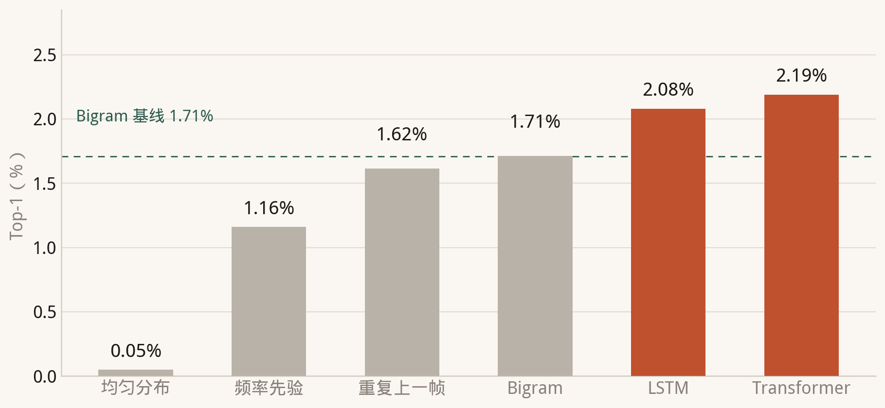
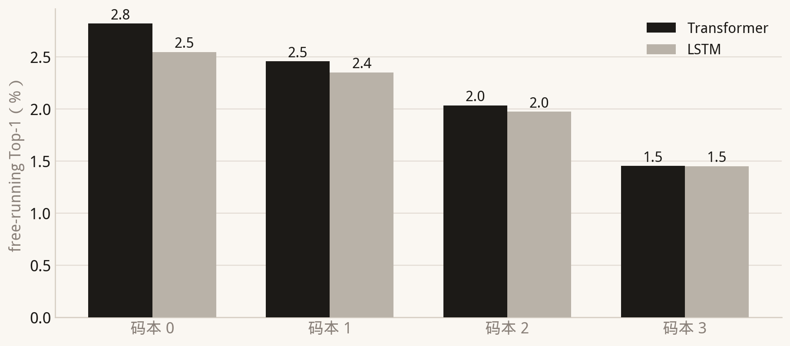
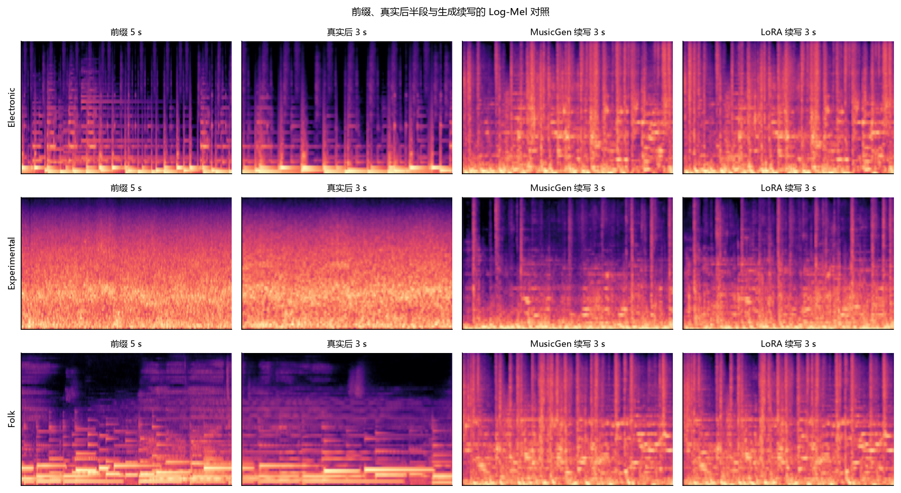

课程项目 · 音乐 AI · 2026
音乐流派分类 × 音频 Token 预测
同一批音乐，模型能听懂多少？
p(流派 | 音频)
判别式 答对几成 Macro-F1p(下一个 Token | 前 5 秒)
生成式 离真相多远 Top-1 / Log-Mel RMSE同一份数据划分 · 同一批测试曲目 · 指标不可比
| GTZAN | FMA-small | |
|---|---|---|
| 曲目 | 985 | 7,994 |
| 类别 | 10 | 8 |
| 训练 / 验证 / 测试 | 690 / 147 / 147 | 5,596 / 1,199 / 1,199 |
| 模型输入 | 中心 5 秒 | 中心 5 秒 |
| 采样率 | 22.05 kHz | 22.05 kHz |
素材本身是 30 秒，但模型全程只听中心 5 秒。
| 同一批特征 | 209 维人工特征，一个都没换 |
| 同一个 CNN | 同一份权重、同一个种子 |
| 换的只是划分 | 「按艺术家划分」→「按曲目划分」 |
81.0% 的测试曲与训练集共享艺术家
| 选手 | 输入 | 参数量 | 体积 | 定位 |
|---|---|---|---|---|
| SVM | 209 维人工特征 | — | 1.2 MB | 老派，抗造 |
| MLP | 209 维人工特征 | 8.8 万 | 1.1 MB | 略弱于 SVM |
| CNN | 64×216 log-Mel | 59 万 | 2.4 MB | 自建冠军（GTZAN） |
| CRNN | 同上 + BiGRU | 42 万 | 1.7 MB | 数据够了才反超 |
| 轻量 Transformer | 同上 + 位置编码 | 65 万 | 1.2 MB | 千首级过拟合 |
| AST | 128×1024 log-Mel | 8,600 万（冻结） | 346 MB | 预训练，两榜第一 |
AST 为冻结主干 + 线性头（7,690 参数），不是微调。



六个模型、同一批曲目、各自投票——内部管这个设定叫「PVP 擂台」
| 曲目 | 真值 | SVM | MLP | CNN | CRNN | TF |
|---|---|---|---|---|---|---|
| 073776 | International | Instrumental ✗ 23% | Folk ✗ 35% | Experimental ✗ 43% | Electronic ✗ 91% | Pop ✗ 29% |
| classical.00099 | classical | classical ✓ 82% | classical ✓ 100% | rock ✗ 77% | country ✗ 70% | jazz ✗ 46% |
| blues.00012 | blues | blues ✓ 65% | blues ✓ 98% | blues ✓ 85% | blues ✓ 97% | blues ✓ 97% |
| 模型 | 生来就信的假设 | 数据少时 | 数据多时 |
|---|---|---|---|
| SVM / MLP | 自己没有先验，但输入的人工特征里全是 | 稳，天花板低 | 天花板低 |
| CNN | 局部性 + 平移等变 | 强 | 强 |
| CRNN | 局部性 + 循环层的记忆 | 稍弱 | 更强 |
| 轻量 Transformer | 只有位置编码，几乎没有结构先验 | 严重过拟合 | 待观察 |
| AST | 架构同上，预训练把先验灌进权重 | 最强 | 最强 |
先验越少，样本效率越低；先验越少，天花板越高。这是一枚硬币的两面。
| 0.753 > 0.723 ≫ 0.542 | GTZAN 985 首：CNN 赢，轻量 TF 差 21 个点 |
| 0.492 > 0.470 | FMA 8 倍数据：CRNN 反超 CNN |
| 0.814 / 0.590 | 同一个 Transformer 架构，预训练后两榜第一 |
问题不在架构，在数据与先验。

30 轮加到 60 轮：GTZAN +0.75 / +1.36，FMA −0.5 左右 —— 再训也这样。

| 试过什么 | 结果 |
|---|---|
| SpecAugment + 标签平滑 | FMA 上最大 +0.7 个点，落在种子波动内 |
| 30 轮 → 60 轮 | 两个数据集互有胜负 |
| 学习率 / 批大小扫描 | 无稳定收益 |
剩下的差距，不是调参能补的。
它知道这是什么。
它不知道接下来会响什么。
p(流派 | 音频) → p(下一个 Token | 前 5 秒)
残差矢量量化：第 1 个码本画轮廓，后 3 个逐级补细节 → 串成整数序列
「预测音频」变成「预测下一个符号」——交叉熵直接能用。
| ① 指标 | 下一个符号猜对没有（Top-1） |
| ② 指标 | 频谱离真实多远（Log-Mel RMSE） |
这两个数不能互相比，也不能跟分类的 0.814 比。
| 基线 | 做法 | Top-1 |
|---|---|---|
| 均匀分布 | 词表内等概率瞎猜 | 0.049% |
| 频率先验 | 永远猜训练集最高频符号 | 1.16% |
| Persistence | 把上一帧原封不动重复一遍 | 1.62% |
| Bigram | 数相邻符号谁跟着谁 | 1.71% |
| 我们的模型 | Transformer / LSTM | 2.19% / 2.08% |
打不过 Persistence，就说明它在假装学习。

2.19% 是瞎猜的 45 倍，也是一百个符号里猜对两个。

| 码本 0 → 码本 3 | 2.8% → 1.5%，由粗到细逐级下降 |
| 这说明 | 结构对得上 RVQ；如果是在瞎猜，四个码本应该一样烂 |
同一段 5 秒前缀，只有后半段不同
A = 真人录音 B = 原始模型 C = LoRA 适配后
8 首测试曲里唯一退步的一首（+0.33）
| loss | 是什么情况 |
|---|---|
| 11.08 | 错误布局：比均匀分布还差 |
| 5.46 | 正确布局 |
| 7.62 | 均匀分布（乱猜的上界） |
| 症状 | 不报错，loss 只停在偏高的值上，看起来像「还没训够」 |
| 改对之后 | 19.23 → 17.91，7/8 首改善，t = −3.36 |
| 配置 | RMSE | 相对原始 | 配对检验 |
|---|---|---|---|
| 原始模型 | 19.23 | — | — |
| LoRA r=8，1200 步 | 17.91 | −1.32 | t = −3.36，显著 |
| LoRA 3600 步 | 17.71 | −1.52 | t = −0.47，不显著 |
| LoRA 全窗口 | 17.64 | −1.59 | t = −0.33，不显著 |
| LoRA r=16 | 18.59 | −0.64 | t = −1.06，不显著 |
NLL 一直在降，音频距离没跟着降。
| 续写长度 | 耗时（RTX 4060） | 情况 |
|---|---|---|
| 3 秒 | 5.6 s | 8/8 曲目稳定，主结果口径 |
| 6 秒 | 16.3 s | 可生成 |
| 8 秒 | 18.3 s | 可生成 |
| 12 秒 | 35.4 s | 可生成 |
| 16 / 20 秒 | — | 崩：位置索引越界 |
崩的原因不在长度：pad/bos 的 id 是 2048，而词表只到 2047。
3 秒是「八首都能稳定跑完」的口径，不是能力上限。

指标：Log-Mel RMSE——离原曲多近
没做：规模化主观听感评分
所以我们只说「客观距离变近了」，不说「变好听了」。
五个负结果都留在报告里：正则化无效 · 轻量 TF 小数据崩 · 噪声下 CNN 垫底 · LoRA 初版失效 · 三旋钮无效
我们没把「跑通」当成「做好」。